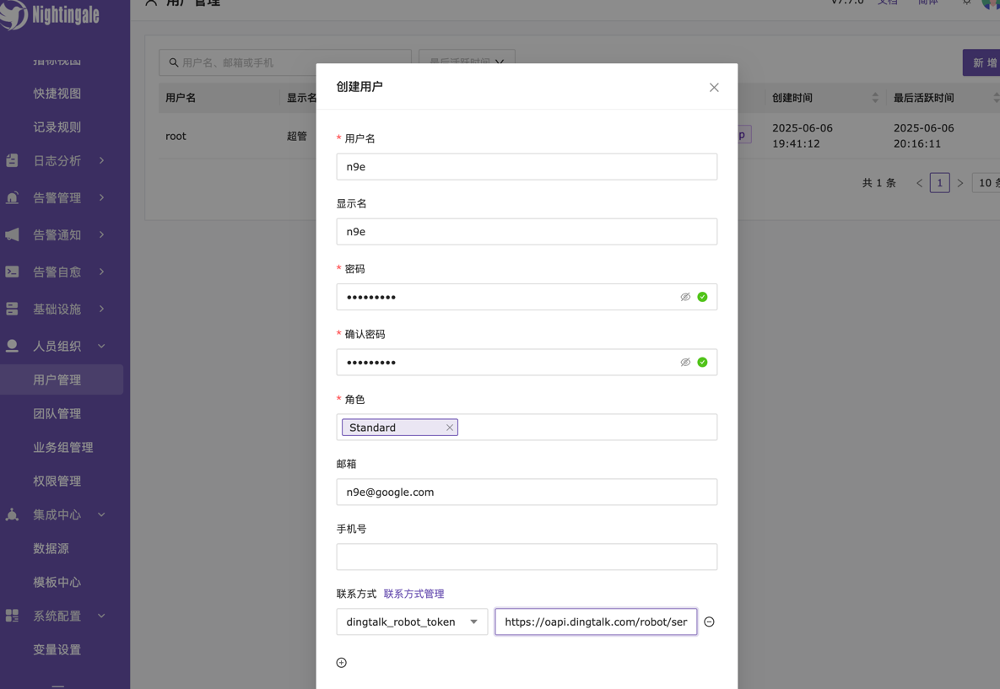
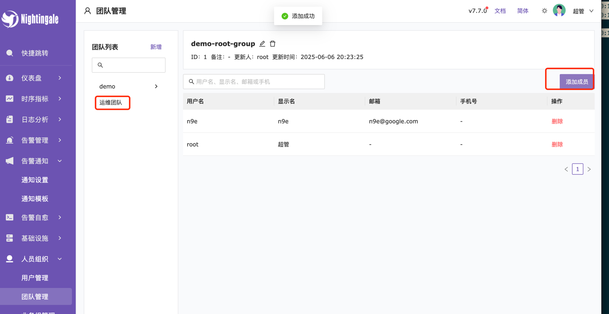
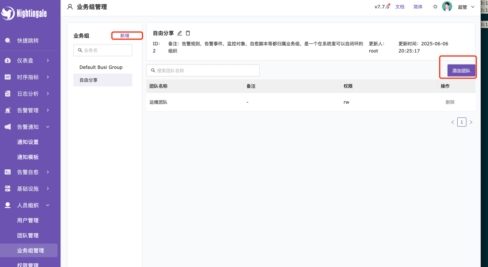
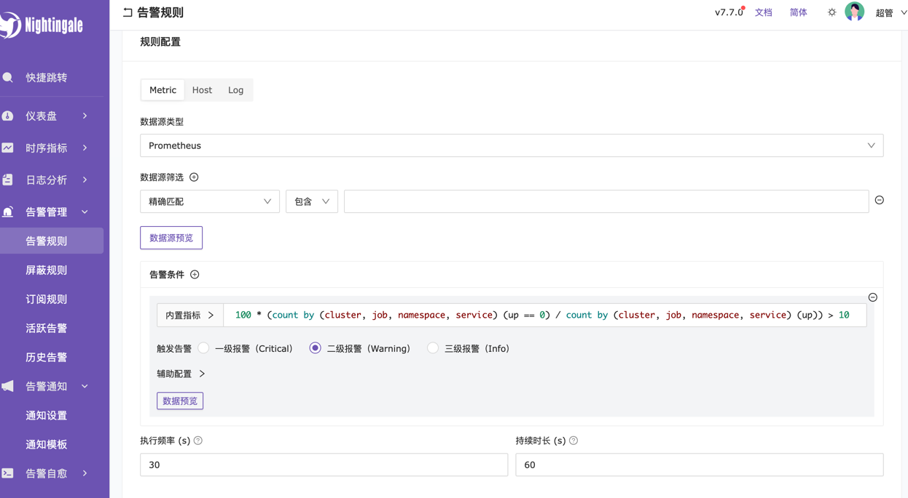
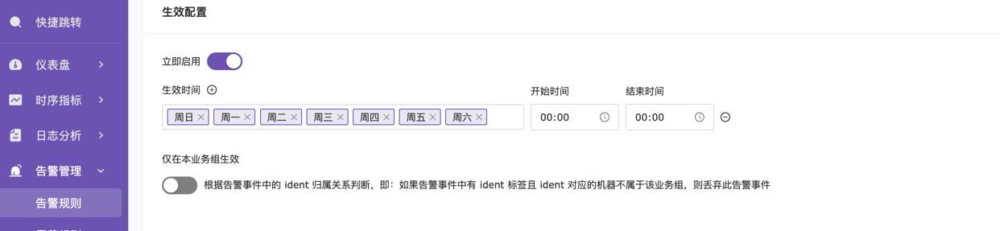
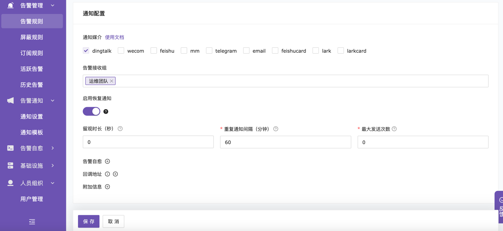
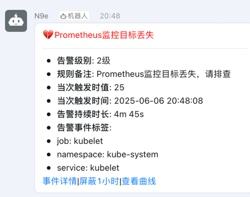

快速部署Prometheus监控系统
Prometheus Server
1.下载prometheus
# wget https://github.com/prometheus/prometheus/releases/download/v2.47.0/prometheus-2.47.0.linux-amd64.tar.gz
wget https://ghfast.top/https://github.com/prometheus/prometheus/releases/download/v2.47.0/prometheus-2.47.0.linux-amd64.tar.gz
tar -xf prometheus-2.47.0.linux-amd64.tar.gz
cd prometheus-2.47.0.linux-amd64
2. 创建相关用户和目录
mkdir -p /etc/prometheus /var/lib/prometheus
useradd --no-create-home --shell /bin/false prometheus
cp prometheus promtool /usr/local/bin/
cp -r consoles console_libraries /etc/prometheus
cp prometheus.yml /etc/prometheus
chown -R prometheus:prometheus /etc/prometheus /var/lib/prometheus
3. 配置 Prometheus
vim /etc/prometheus/prometheus.yml
global:
scrape_interval: 15s # Set the scrape interval to every 15 seconds. Default is every 1 minute.
evaluation_interval: 15s # Evaluate rules every 15 seconds. The default is every 1 minute.
# scrape_timeout is set to the global default (10s).
# Alertmanager configuration
alerting:
alertmanagers:
- static_configs:
- targets:
# - alertmanager:9093
# Load rules once and periodically evaluate them according to the global 'evaluation_interval'.
rule_files:
# - "first_rules.yml"
# - "second_rules.yml"
# A scrape configuration containing exactly one endpoint to scrape:
# Here it's Prometheus itself.
scrape_configs:
# The job name is added as a label `job=<job_name>` to any timeseries scraped from this config.
- job_name: "prometheus"
# metrics_path defaults to '/metrics'
# scheme defaults to 'http'.
static_configs:
- targets: ["localhost:9090"]
4. 创建系统服务文件
为了方便管理 Prometheus 服务的启动、停止和重启，可以创建一个系统服务文件。
cat > /etc/systemd/system/prometheus.service << 'EOF'
[Unit]
Description=Prometheus
Wants=network-online.target
After=network-online.target
[Service]
User=prometheus
Group=prometheus
Type=simple
ExecStart=/usr/local/bin/prometheus \
--config.file /etc/prometheus/prometheus.yml \
--storage.tsdb.path /var/lib/prometheus/ \
--web.console.templates=/etc/prometheus/consoles \
--web.console.libraries=/etc/prometheus/console_libraries \
--web.enable-lifecycle \
--storage.tsdb.retention.time=180d
[Install]
WantedBy=multi-user.target
EOF
5. 启动服务
systemctl daemon-reload && systemctl enable prometheus --now
ss -tnlp|grep 9090
LISTEN 0 128 [::]:9090 [::]:* users:(("prometheus",pid=15231,fd=7))
6. 添加到Prometheus监控
prometheus.yml
...
scrape_configs:
...
- job_name: "promehtues-node01"
static_configs:
- targets: ["192.168.1.68:9100"]
- job_name: "promehtues-node02"
static_configs:
- targets: ["192.168.1.69:9100"]
Node Exporter
1. 下载 Node Exporter
#wget https://github.com/prometheus/node_exporter/releases/download/v1.6.1/node_exporter-1.6.1.linux-amd64.tar.gz
wget https://ghfast.top/https://github.com/prometheus/node_exporter/releases/download/v1.6.1/node_exporter-1.6.1.linux-amd64.tar.gz
tar -xzf node_exporter-1.6.1.linux-amd64.tar.gz
cd node_exporter-1.6.1.linux-amd64
2. 创建用户
为安全起见，创建一个专门的用户来运行 Node Exporter
useradd --no-create-home --shell /bin/false node_exporter
cp node_exporter /usr/local/bin
chown node_exporter:node_exporter /usr/local/bin/node_exporter
3. 创建系统服务
cat > /etc/systemd/system/node_exporter.service << 'EOF'
[Unit]
Description=Node Exporter
Wants=network-online.target
After=network-online.target
[Service]
User=node_exporter
Group=node_exporter
Type=simple
ExecStart=/usr/local/bin/node_exporter
[Install]
WantedBy=multi-user.target
EOF
4. 启动服务
systemctl daemon-reload && systemctl enable node_exporter --now
ss -tnlp|grep 9100
LISTEN 0 128 [::]:9100 [::]:* users:(("node_exporter",pid=12535,fd=3))
Grafana
yum install -y https://dl.grafana.com/oss/release/grafana-11.6.1-1.x86_64.rpm
systemctl enable grafana-server.service --now
夜莺监控
安装 redis 和 mariadb
获取并解压n9e
curl -H'Referer: https://console.flashcat.cloud' -O https://download.flashcat.cloud/n9e-v7.7.0-linux-amd64.tar.gz
mkdir /data/apps/n9eapp
tar -xf n9e-v7.7.0-linux-amd64.tar.gz -C /data/apps/n9eapp
初始化数据库
mysql -uroot -e "grant all on *.* to 'n9e'@'%' identified by 'Passw0rd';"
mysql -u ne9 -p'Passw0rd' < /data/apps/n9eapp/n9e.sql
mysql -u ne9 -p'Passw0rd' -e "show databases;"
+--------------------+
| Database |
+--------------------+
| information_schema |
| mysql |
| n9e_v6 |
| performance_schema |
+--------------------+
启动服务
cd /data/apps/n9eapp && vim etc/config.toml|
[DB]
DSN = "root:Passw0rd@tcp(192.168.1.101:3306)/n9e_v6?charset=utf8mb4&parseTime=True&loc=Local&allowNativePasswords=true"
[Redis]
Address = "192.168.1.101:6379"
cat > /usr/lib/systemd/system/n9e.service <<EOF
[Unit]
Description=Nightinagle
[Service]
WorkingDirectory=/data/apps/n9eapp
ExecStart=/data/apps/n9eapp/n9e
[Install]
WantedBy=multi-user.target
EOF
systemctl start n9e
[root@k8s-master01 n9eapp]# ss -tnlp|grep 17000
LISTEN 0 32768 *:17000 *:* users:(("n9e",pid=24538,fd=11))
访问 UI, 默认密码为 root/root.2020

配置钉钉告警
- 添加 Prometheus数据源

- 创建用户,在用户联系方式添加钉钉机器人

- 创建团队，并将用户添加到团队

- 创建业务组，并将团对添加到业务组

- 添加告警规则
- 定义规则名称
- 配置规则

-
生效配置 
-
通知配置

- 查看告警
